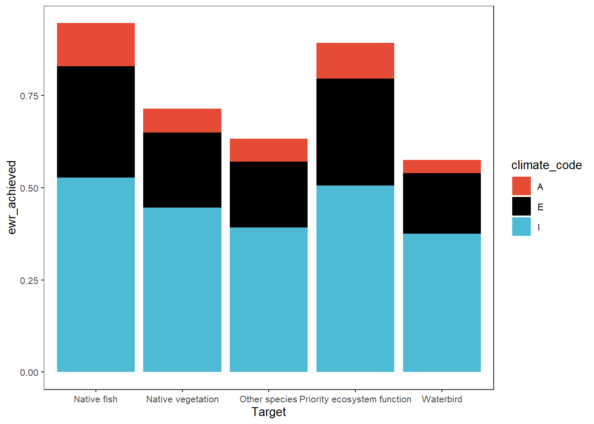
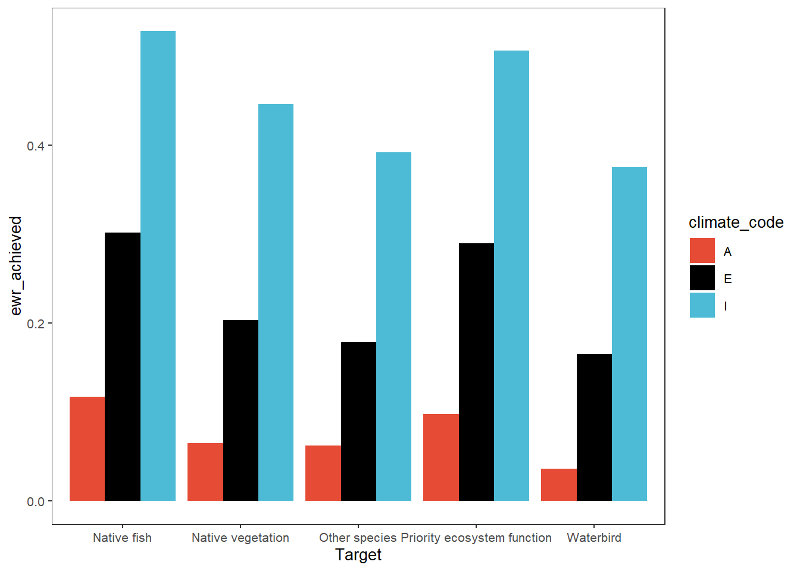
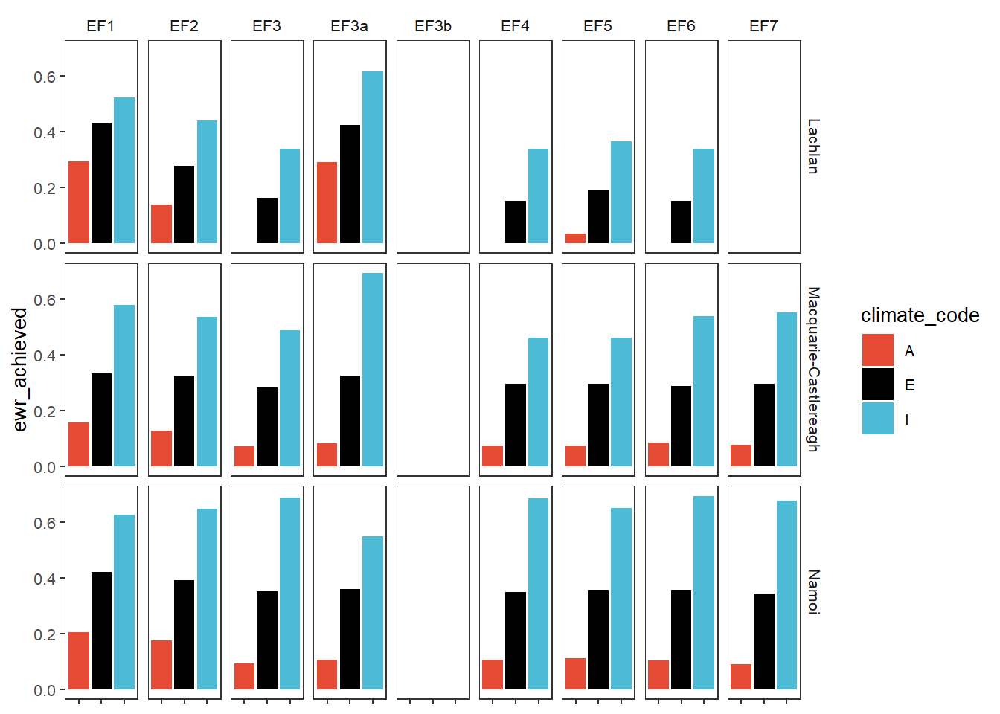
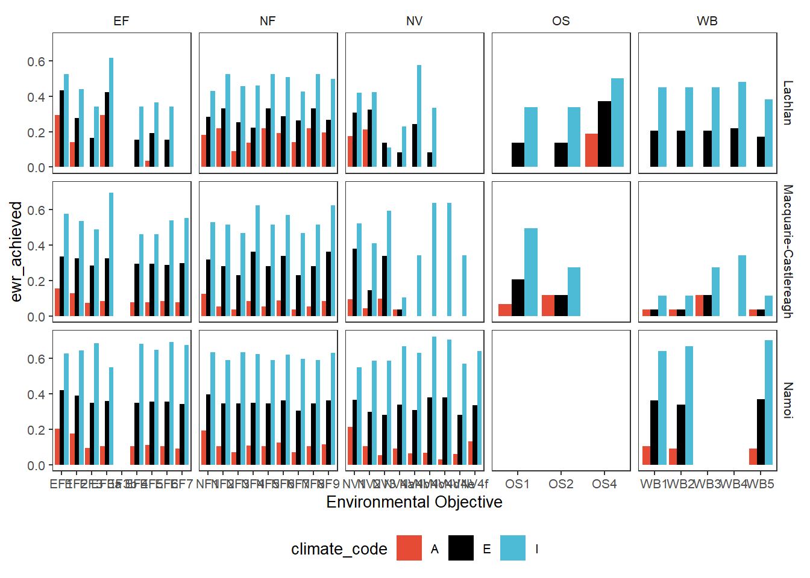
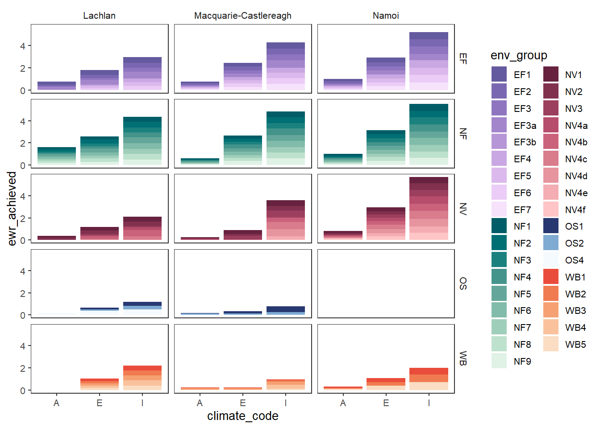
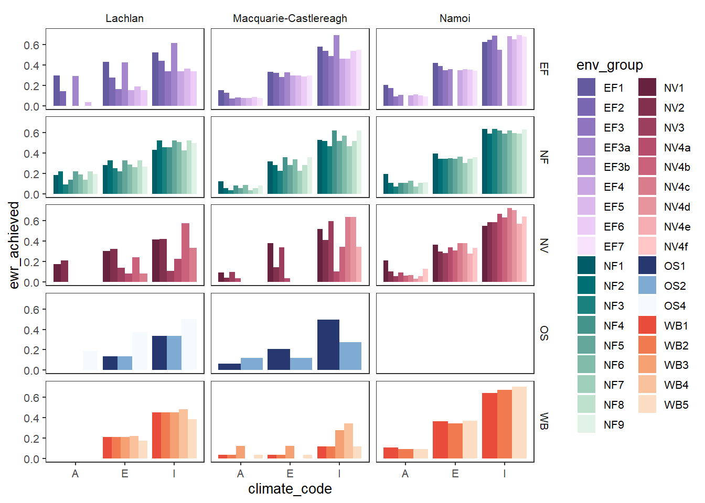
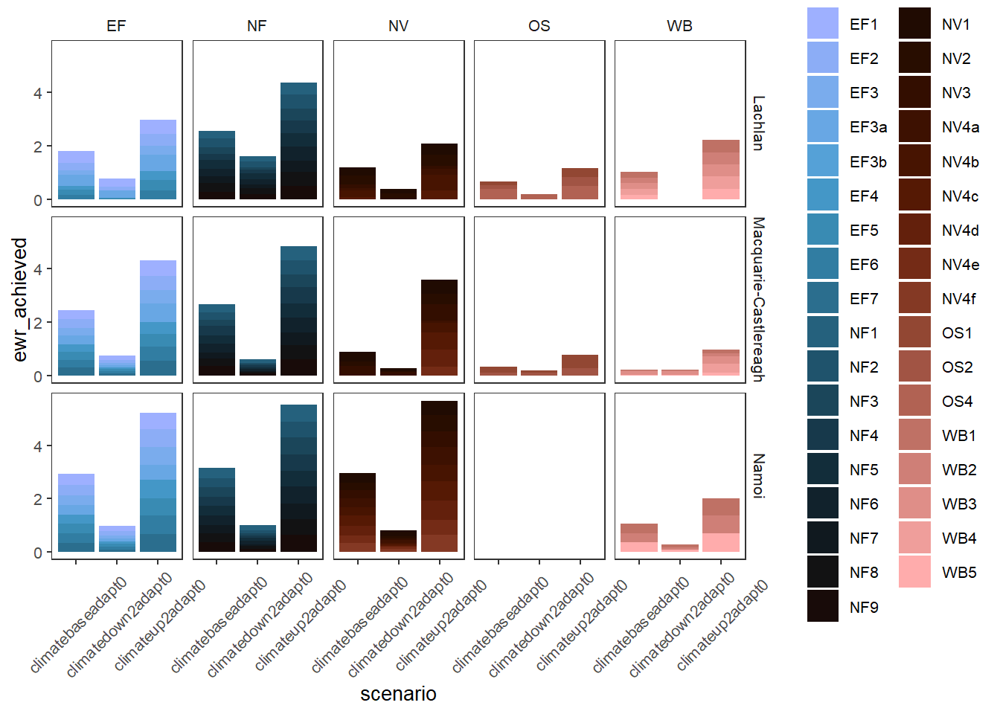
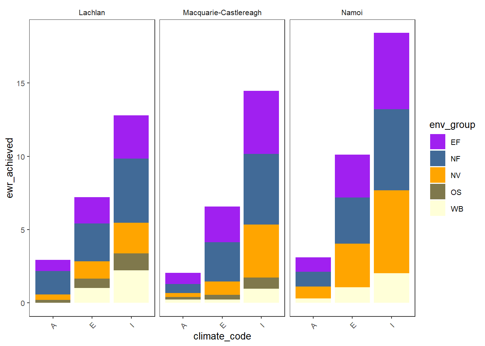

library(werptoolkitr)
library(ggplot2)
library(dplyr)
library(sf)Bar plots
Overview
This notebook provides examples of creating bar plots, e.g. plots with one quantitative y-axis for outcome, and a qualitative x-axis. The x-axis is often, but not always, scenario. We also demonstrate here the ability to use color and different color palettes to include additional information, including spatial unit and type of response.
For a quantitative x-axis, we would typically use line plots.
Demonstration setup
As usual, we need paths to the data.
project_dir <- file.path('scenario_example')
agg_dir <- file.path(project_dir, 'aggregator_output')Scenario information
This will be attached to metadata, typically. For now, I’m just using it for diagnostic plots and the demonstration data is simple, so make it here.
scenarios <- tibble::tibble(scenario = c('base', 'down4', 'up4'), delta = c(1, 0.25, 4))Subset for demo
We have a lot of hydrographs, so for this demonstration, we will often use a subset.
gauges_to_plot <- c('412002', '419001', '422028', '421001')Standard scenario appearance
We want to have a consistent look for the scenarios across the project, with a logical ordering and standard colors. In future, this will potentially be able to be parsed from metadata, but at present we will define these properties manually. They are not included in the {werptoolkitr} package because they are project/analysis- specific.
sceneorder <- forcats::fct_reorder(scenarios$scenario, scenarios$delta)
scene_pal <- make_pal(unique(scenarios$scenario),
palette = 'ggsci::nrc_npg',
refvals = 'base', refcols = 'black')Make bar plots
Choosing example data
First, we read in the aggregated data and make a simple demonstration bar plot. There is example data provided by the toolkit (agg_theme_space and agg_theme_space_colsequence), but to continue with the demonstration, we will use the aggregations created here in the interleaved aggregation notebook.
Note- to readRDS sf objects, we need to have sf loaded.
agged_data <- readRDS(file.path(agg_dir, 'summary_aggregated.rds'))That has all the steps in the aggregation, so we’ll choose one (the Objective theme scale at the basin spatial scale, agged_data$mdb) for the first set of plots and another (agged_data$sdl_units at the SDL unit scale and env_obj theme scale for the second set of plots. This finer scale lets us look at complicating factors like multiple spatial units and grouping outcomes.
To make these examples more easily, we create some slightly simpler dataframes here for those examples, but this isn’t really necessary- small data manipulations are easily piped in to plot_outcomes. The basin-scale needs a bit of cleanup because Objectives (and many of the other categories other than codes, e.g. yearly targets) are really long. We could fold them in the facet labels with ggplot2::label_wrap_gen(), but they’re so long it blocks out the plots. Ideally, we would use descriptive short names for each, but that’s a large manual job to assign them. For this demonstration, I’ll just cut them off and make them unique, but we need a better solution. The SDL units data is given a grouping column that puts the many env_obj variables in groups defined by their first two letters, e.g. EF for Ecosystem Function.
If we had used multiple aggregation functions at any step, we should filter down to the one we want here, but we only used one for this example.
# make the super long names shorter but less useful.
basin_to_plot <- agged_data$mdb %>%
dplyr::filter(!is.na(Objective)) %>%
dplyr::mutate(Objective = stringr::str_trunc(Objective, 15)) %>%
dplyr::group_by(scenario, Objective) %>%
dplyr::mutate(id = as.character(row_number())) %>%
dplyr::ungroup() %>%
dplyr::mutate(Objective = stringr::str_c(Objective, '_', id)) %>%
dplyr::select(-id)
# Create a grouping variable
obj_sdl_to_plot <- agged_data$sdl_units |>
dplyr::mutate(env_group = stringr::str_extract(env_obj, '^[A-Z]+')) |>
dplyr::filter(!is.na(env_group)) |>
dplyr::arrange(env_group, env_obj)Scenario fills
Basin scale
We can make plots looking at how scenarios differ for each of the outcome categories. This uses facet_wrapper to just wrap the single facet axis, looking at the basin scale and Objectives first. If we had more than one spatial unit, we would need to either filter to a target unit or facet by them. As with {ggplot2} itself, we tend to use facet_wrap for single-variable facetting and facet_row and facet_grid for specifying rows and columns, though here we use facet_row and facet_col to feed facet_grid. Plots at the basin scale are the simplest because we don’t have to worry about different bars for different spatial units.
The colorset argument is the column that determines color, while the pal_list defines those colors, here as a named colors object, but as we see below it can also be palette names. The sceneorder argument lets us explicitly set the order of the scenarios. This is typically easiest to have a Factor object with the scenarios and their orders, as here. But we can also just use a character vector (demonstrated later).
plot_outcomes(basin_to_plot,
y_col = 'ewr_achieved',
facet_wrapper = 'Objective',
colorset = 'scenario',
pal_list = scene_pal,
sceneorder = sceneorder)
We retain the axis names as-is from the incoming dataframe, as they provide the true meaning of each value. But we can change them, either inside the plot_outcomes function or post-hoc. We can also set the sceneorder with a character vector if that’s easier than setting up a Factor.
plot_outcomes(basin_to_plot,
y_col = 'ewr_achieved',
y_lab = 'Proportion Objectives\nAchieved',
x_lab = 'Scenario',
color_lab = 'Scenario',
facet_wrapper = 'Objective',
colorset = 'scenario',
pal_list = scene_pal,
sceneorder = c('down4', 'base', 'up4'))
Because these are just ggplot objects, we can also change the labels outside the function, which can be very useful for checking that each axis is in fact what we think it is before giving it clean labels.
scenebar <- plot_outcomes(basin_to_plot,
y_col = 'ewr_achieved',
facet_wrapper = 'Objective',
colorset = 'scenario',
pal_list = scene_pal,
sceneorder = sceneorder)
scenebar + labs(x = NULL, y = 'Proportion\nObjectives Achieved')
Another approach is to put the outcomes on the x-axis, and color by scenario. This requires using the special scene_pal argument currently instead of pal_list. This is a bit of a historical holdover and will be made more general.
plot_outcomes(basin_to_plot,
y_col = 'ewr_achieved',
x_col = 'Objective',
colorset = 'scenario',
scene_pal = scene_pal,
sceneorder = sceneorder)
Using dodged bars can allow clearer comparisons, particularly accentuating the variation in sensitivity of the different outcomes to the scenarios, though there are a lot of bars to try to read here.
plot_outcomes(basin_to_plot,
y_col = 'ewr_achieved',
x_col = 'Objective',
colorset = 'scenario',
scene_pal = scene_pal,
sceneorder = sceneorder,
position = 'dodge')SDL units
We can use the aggregation step of env_obj and SDL units to demonstrate plotting that not only addresses the outcomes for scenarios, but how they differ across space. I’ll often use subsets of the env_obj codes here to keep the number of plots visible.
First, we look at how the different scenarios perform for the Ecosystem Function objectives in each SDL unit
obj_sdl_to_plot %>%
filter(grepl('^EF', env_obj)) %>%
plot_outcomes(y_col = 'ewr_achieved',
facet_col = 'env_obj',
facet_row = "SWSDLName",
colorset = 'scenario',
pal_list = scene_pal,
sceneorder = sceneorder)We address a few ways to handle groups of outcome variables, one of the simplest is to simply facet these plots by those groups, with all the outcomes in the group getting their own bars. This puts the objectives on x and colors by scenario, with the groups accentuated by facets. These can be stacked (position = 'stack'- the default) or dodged (demonstrated here).
dodgefacet <- obj_sdl_to_plot |>
plot_outcomes(y_col = 'ewr_achieved',
x_col = 'env_obj',
colorset = 'scenario',
facet_row = 'SWSDLName',
facet_col = 'env_group',
scales = 'free_x',
scene_pal = scene_pal,
sceneorder = sceneorder,
position = 'dodge')
dodgefacet + theme(legend.position = 'bottom') +
labs(x = 'Environmental Objective')
Colors from outcomes
Rather than facetting, we can stack each of the outcome categories (here, Objectives). To do this, we simply change the colorset to “Objective” instead of ‘scenario’ (the default x_col is scenario, so it remains on x). We also change the pal_list to a {paletteer} name, providing the palette from which to choose colors for each Objective. This yields a more compact plot that shows overall outcomes at the expense of making it harder to see what any particular objective is doing, particularly with many outcomes and long names. But with careful selection of a color palette and cleaner naming (or just far fewer categories), this could be a very useful approach.
plot_outcomes(basin_to_plot,
y_col = 'ewr_achieved',
colorset = 'Objective',
pal_list = list("scico::oslo"),
sceneorder = sceneorder) +
guides(fill = guide_legend(ncol = 2))
In another example of colors from other information in the data, when we have multiple spatial units we might color by them instead of coloring by outcome category. Here, we show how to color by SDL unit (SWSDLName) instead of env_obj. That still stacks the env_obj outcomes in each catchment, but coloring them all the same, and so is itself a sort of simple aggregation.
plot_outcomes(obj_sdl_to_plot,
y_col = 'ewr_achieved',
colorset = 'SWSDLName',
pal_list = list("ggsci::default_jama"),
sceneorder = sceneorder)
That shows that while all SDL units are affected by the changes in the flow, the Lachlan is less sensitive.
We can also use position = 'dodge' to have side-by-side bars instead of stacked. Note that in this case, where we’re coloring by SDL unit but there are many env_obj values, those env_obj no longer stack, and so we have to manually stack them by calculating their sum. This would not be the case if we were coloring by individual rows (env_obj)- see examples of that below.
obj_sdl_to_plot %>%
group_by(SWSDLName, scenario) %>%
summarise(ewr_achieved = sum(ewr_achieved, na.rm = TRUE)) %>%
ungroup() %>%
plot_outcomes(y_col = 'ewr_achieved',
colorset = 'SWSDLName',
pal_list = list("calecopal::lake"),
sceneorder = sceneorder,
position = 'dodge')
We are about to consider grouped colors as a way to assign different palettes to different groups. But a simpler way to show outcomes groups is to color by the groups directly if we don’t care what the individual env_objs are doing between them. This is very similar to the plots coloring by SDL unit above.
plot_outcomes(obj_sdl_to_plot,
y_col = 'ewr_achieved',
colorset = 'env_group',
pal_list = list("scico::berlin"),
facet_col = 'SWSDLName',
facet_row = '.',
sceneorder = sceneorder)colors not specified per level. Trying to use the 'colors' argument as a palette
name
Grouped colors
We have the ability to assign different color palettes to different sets of outcomes, yielding what is essentially another axis on which we can plot information. We use this same ability across a number of plot types, particularly causal networks. For example, we might categorize the env_obj outcomes into the larger scale groups (e.g. ‘NF’, ‘EF’, etc). We can then assign each of these a separate palette, and so the individual env_objs get different colors chosen from different palettes.
Achieving this requires specifying two columns- the colorset, as above, is the column that determines color. The colorgroups column specifies the groupings of those colorset values, and so what palette to use. Thus, the pal_list needs to be either length 1 (everything gets the same palette) or length(unique(data$colorgroups)). Note also that the colorset values must be unique to colorgroups- this cannot be a one-to-many mapping because each colorset value must get a color from a single palette defined by the colorgroup it is in.
We demonstrate with env_obj variables mapped to larger environmental groups, making it easier to see at a glance the sorts of environmental objectives that are more or less affected, while also allowing views of the individual environmental objectives. Here we use facet_col and facet_row to ensure the SDL units don’t wrap around. We made the env_groups column when we chose the data initially.
# Create a palette list
env_pals = list(EF = 'grDevices::Purp',
NF = 'grDevices::Mint',
NV = 'grDevices::Burg',
OS = 'grDevices::Blues',
WB = 'grDevices::Peach')
# need to facet by space sdl unit and give it the colorgroup argument to take multiple palettes
sdl_stack <- obj_sdl_to_plot |>
plot_outcomes(y_col = 'ewr_achieved',
colorgroups = 'env_group',
colorset = 'env_obj',
pal_list = env_pals,
facet_col = 'SWSDLName',
facet_row = '.',
sceneorder = sceneorder)
sdl_stackAdding facetting by those groups can make that easier to read if the goal is to focus on changes within groups, but more plots.
obj_sdl_to_plot |>
plot_outcomes(y_col = 'ewr_achieved',
colorgroups = 'env_group',
colorset = 'env_obj',
pal_list = env_pals,
facet_col = 'SWSDLName',
facet_row = 'env_group',
sceneorder = sceneorder)
We could also split those bars sideways instead of stack them, but that likely makes more sense if there are fewer categories than here. We again use position = 'dodge', but now we don’t need to sum because we’re stacking each row already. I’ve flipped the facetting and taken advantage of the fact that these are just ggplot objects to remove the legend, making it very slightly easier to read (but harder to interpret).
obj_sdl_to_plot |>
plot_outcomes(y_col = 'ewr_achieved',
colorgroups = 'env_group',
colorset = 'env_obj',
pal_list = env_pals,
facet_col = 'env_group',
facet_row = 'SWSDLName',
sceneorder = sceneorder,
position = 'dodge') +
theme(legend.position = 'none')
Another approach to groups of outcomes without the colors explicitly grouped is to not use colorgroup, but instead just facet by the group and give every colorset value a color from the same palette. Depending on the palette chosen and the breaks, this can be quicker, but will not accentuate groups as well.
obj_sdl_to_plot |>
plot_outcomes(y_col = 'ewr_achieved',
colorgroups = NULL,
colorset = 'env_obj',
pal_list = list('scico::berlin'),
facet_row = 'SWSDLName',
facet_col = 'env_group',
scales = 'free_x',
scene_x = FALSE,
scene_pal = scene_pal,
sceneorder = sceneorder) 
These plots are interesting, but in typical use, the plots above using facets for the groups or coloring by the groups themselves are likely to be easier to read, unless we really are interested in this level of granularity. Whatever approach we choose for a given plot, accentuating the differences between outcome groups can be a powerful interpretation tool.
Manual color definition
Though the above examples using {paletteer} palettes are the easiest way to specify coloring, we don’t have to let the palettes auto-choose colors, and can instead pass colors objects, just as we do for scenarios. This can be particularly useful with small numbers of groups (defining too many colors is cumbersome- that’s what palettes are for) when we want to control which is which. Just as with scenarios, we use make_pal . Here, we will use ‘scico::berlin’ as the base, but define several ‘reference’ values manually. This demonstration uses includeRef = TRUE so we replace the palette values with the refs, rather than choose them from the set of values with refs removed. This tends to yield better spread of colors (and lets us sometimes ref colors and sometimes not if we also used returnUnref). For example, maybe we want to sometimes really accentuate ecosystem function and native vegetation, but not in all plots.
First, we create the palettes with and without the (garish) ref values.
obj_pal <- make_pal(levels = unique(obj_sdl_to_plot$env_group),
palette = 'scico::lisbon',
refvals = c('EF', 'NV'), refcols = c('purple', 'orange'), includeRef = TRUE, returnUnref = TRUE)Then we can create an accentuated plot sometimes, if, perhaps, we want to highlight how EF performed.
plot_outcomes(obj_sdl_to_plot,
y_col = 'ewr_achieved',
colorset = 'env_group',
pal_list = obj_pal$refcols,
facet_col = 'SWSDLName',
facet_row = '.',
sceneorder = sceneorder)
But for other plots maybe we don’t want that accentuation and we can use the unrefcols to retain the standard coloring- note that ‘NF’, ‘OS’, and ‘WB’ colors are unchanged.
plot_outcomes(obj_sdl_to_plot,
y_col = 'ewr_achieved',
colorset = 'env_group',
pal_list = obj_pal$unrefcols,
facet_col = 'SWSDLName',
facet_row = '.',
sceneorder = sceneorder)